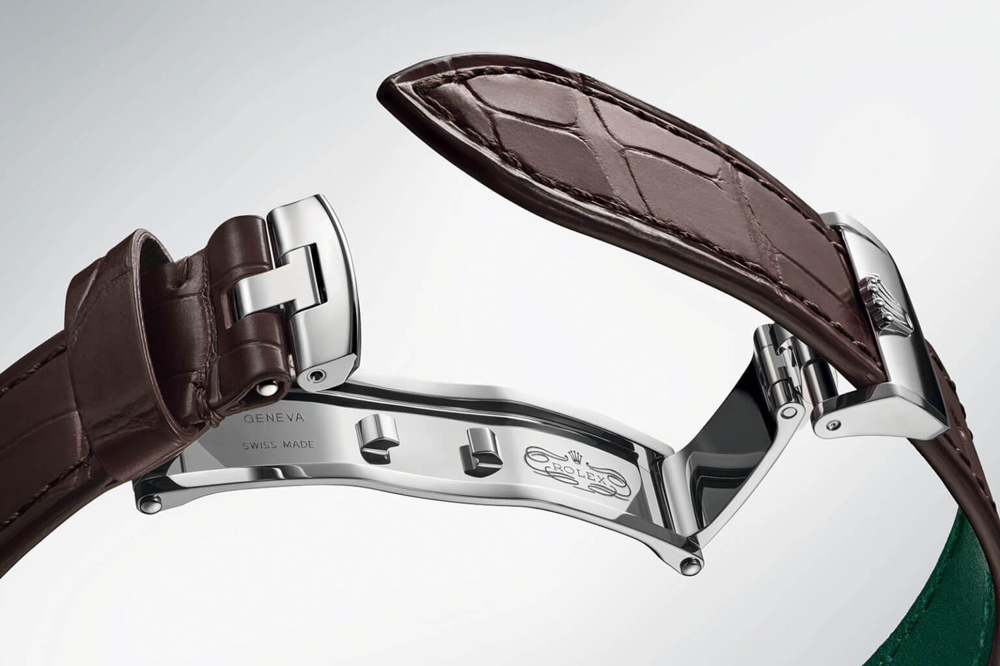
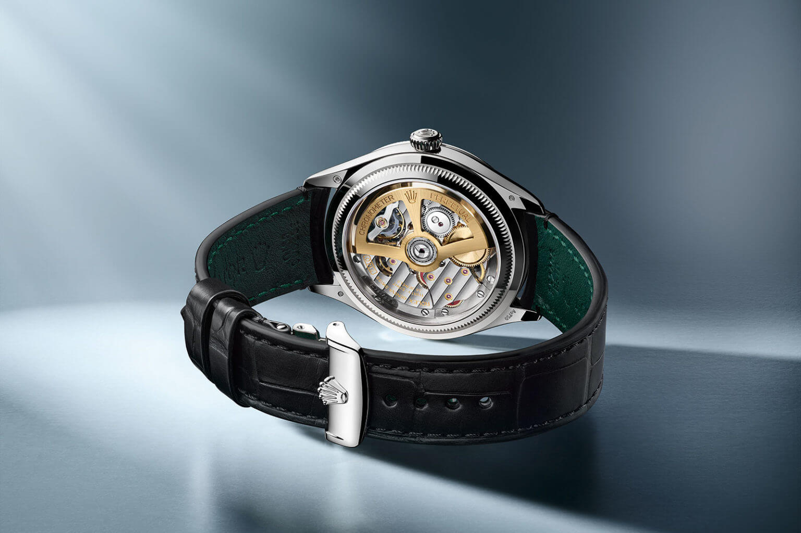

Rolex Introduces the Dualclasp on the New Perpetual 1908
Rolex opened a new collection at Watches and Wonders 2023 with the Perpetual 1908. Alongside the new calibre, the watch introduced a leather strap clasp system the brand calls the Dualclasp. Here is what it is.
 Nenad Pantelic • May 9, 2023
Nenad Pantelic • May 9, 2023

The Perpetual 1908 replaces the Cellini and opens a collection named Perpetual. The name refers to 1908, the year Hans Wilsdorf registered the Rolex trademark in Switzerland. It is a 39mm gold dress watch, water resistant to 50m, powered by the new calibre 7140. Yellow gold is reference 52508 and white gold is 52509.
Lug width is 20mm. An interesting fact: the strap carries its own reference, 24HA08.
How the Dualclasp works
A conventional deployant has a single blade that folds under the wrist and latches. The Dualclasp uses two blades that are symmetrical to each other. Both fold inwards from opposite sides and meet in the middle.
Rolex states that the shape is designed so the closed clasp always sits centred on the underside of the wrist. On a single-blade deployant the fastening tends to settle off-centre, because the fixed blade takes up length on one side only. Two blades divide that length between both sides.
The clasp is made in 18ct gold matching the case, yellow or white. On the later platinum version of the 1908, Rolex makes the Dualclasp in 950 platinum.
Why a dress watch gets a folding clasp
A leather strap can close two ways. A pin buckle pushes a pin through a punched hole, so the strap is open at one point around the wrist and the tail tucks through keepers. A folding clasp, also called a deployant, keeps the strap as a closed loop and hinges open to let the wrist through.
The folding clasp costs more, adds height under the wrist and makes the strap harder to size, because the length is set once by where the strap is attached to the clasp. In exchange, the leather is not bent sharply at a buckle hole every day, which is where most straps crack first, and the strap does not need a tail long enough to tuck away.
On gold dress watches the folding clasp is the normal choice, partly for strap life and partly because it puts the precious metal on show.
The strap
The 1908 is fitted on matt alligator, in black or brown. Matt is the less common finish for alligator on a precious-metal dress watch, where a glossy skin is the usual choice.
Stitching is tone-on-tone, so there is no contrast thread. The strap end is slightly curved to meet the round case. The lining is green calfskin, which Rolex uses across its leather straps, and it means the surface against the skin is calf, not alligator.
At 20mm the 1908 uses one of the most common dress-watch lug widths, so the aftermarket has plenty of material available. Whether a third-party strap end mates cleanly with a gold Dualclasp is a separate question, and one we have not seen tested.
Specifications
| Brand | Rolex |
| Model | Perpetual 1908 |
| References | 52508 (18ct yellow gold), 52509 (18ct white gold) |
| Case | 39mm, 50m water resistant |
| Strap reference | 24HA08 |
| Lug width | 20mm |
| Strap | Matt alligator, black or brown, tone-on-tone stitching |
| Lining | Green calfskin |
| Clasp | Dualclasp, double folding, 18ct yellow or white gold |
| Movement | Calibre 7140, Superlative Chronometer |
| Price | $22,000 yellow gold, $23,300 white gold |

What we think
Folding clasps have changed very little in a long time, and most brands fit a generic one, sourced from third party manufacturers. Most brands do not design their own clasp, let alone name it.
Whether two blades beat one well-made blade is genuinely open for discussion. More blades means more components and more edges, which in a poorly finished clasp means more places to catch skin or hair. At this level of finishing that is unlikely to be an issue, though the same design executed cheaply might be.
There is a practical benefit to any folding clasp that applies here. With a deployant you are not pushing a buckle pin through the same hole every day, and that hole is where leather straps usually fail first. Spreading the fold across two hinges instead of one may also distribute wear differently, though that is a theory rather than something anyone has measured.
The point we would watch is thickness. Two stacked blades sit under the wrist, and on a 39mm dress watch intended to pass under a shirt cuff, height under the case matters.
Where to look next
The things to follow are whether the Dualclasp spreads to other Rolex leather models, and whether the similar design shows up elsewhere in the industry. The strap specification is easier to borrow: a matt skin with tone-on-tone stitching and a soft contrasting lining is a combination plenty of handmade makers already offer, and it pairs with any good deployant.